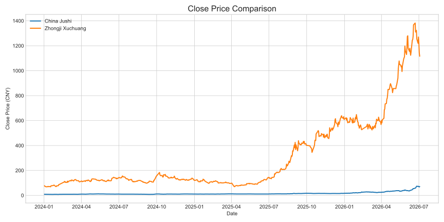
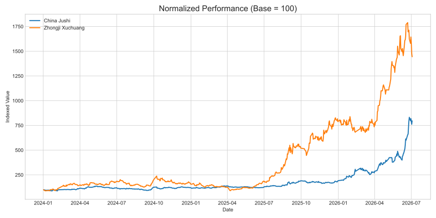
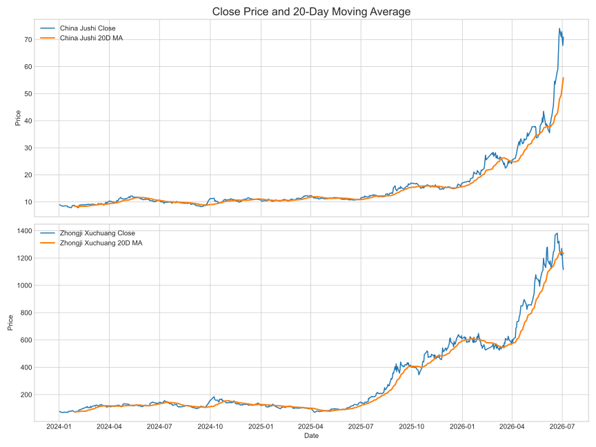

这是量化交易课程第一周作业的基础版本，目标是跑通“数据获取、基础可视化、网页展示、Notebook复现”这条最小闭环。 本页面使用腾讯财经公开日线接口获取前复权数据，并对两只 A 股股票进行简单的价格和走势比较。
Date range: 2024-01-02 to 2026-07-03
Close price: 8.90 -> 70.90
Total return: 696.18%
Avg volume: 541021 hands/day
Date range: 2024-01-02 to 2026-07-03
Close price: 77.25 -> 1116.00
Total return: 1344.57%
Avg volume: 349288 hands/day
标的选择为 中国巨石（600176） 和 中际旭创（300308）。 数据频率为日线，使用前复权价格，时间范围从 2024 年开始到最新可获得交易日。
这样做的好处是：一方面能快速稳定地拿到开盘价、收盘价、最高价、最低价和成交量这些核心字段， 另一方面前复权价格更适合观察较长时间区间内的走势变化。

图 1：两只股票的收盘价走势。这个图最直观，适合先看原始价格变化。

图 2：把起点统一设为 100 之后，更适合比较哪只股票在同一区间里涨得更多。

图 3：加入 20 日均线后，可以更容易观察价格趋势是否平稳、是否存在加速上涨或回落。
| date | open | close | high | low | volume | pct_change |
|---|---|---|---|---|---|---|
| 2026-06-29 | 75.53 | 70.98 | 75.53 | 66.80 | 2496641.0 | -4.236373 |
| 2026-06-30 | 68.50 | 72.88 | 76.99 | 68.01 | 2218754.0 | 2.676810 |
| 2026-07-01 | 73.96 | 70.27 | 75.03 | 69.51 | 1858164.0 | -3.581229 |
| 2026-07-02 | 67.80 | 67.82 | 71.95 | 63.25 | 1854938.0 | -3.486552 |
| 2026-07-03 | 68.18 | 70.90 | 74.60 | 65.51 | 2321014.0 | 4.541433 |
| date | open | close | high | low | volume | pct_change |
|---|---|---|---|---|---|---|
| 2026-06-29 | 1239.00 | 1220.00 | 1264.21 | 1169.49 | 352899.0 | -2.702789 |
| 2026-06-30 | 1223.01 | 1270.00 | 1295.60 | 1218.21 | 276783.0 | 4.098361 |
| 2026-07-01 | 1263.50 | 1223.17 | 1315.57 | 1208.00 | 271557.0 | -3.687402 |
| 2026-07-02 | 1160.00 | 1143.00 | 1198.00 | 1127.40 | 317620.0 | -6.554281 |
| 2026-07-03 | 1130.00 | 1116.00 | 1188.01 | 1115.00 | 328618.0 | -2.362205 |
从归一化走势图来看，两只股票在同一时间区间内的表现差异明显，说明它们虽然都属于 A 股市场，但行业属性、市场关注度和波动结构并不相同。 中国巨石的走势更偏传统制造材料风格，而中际旭创作为算力与光模块相关标的，波动更大，也更容易出现趋势加速。
这一步还不是正式策略回测，只是完成课程第一周最基本的数据分析闭环。后续如果继续做作业增强版，可以进一步增加： 均线指标、收益率分布、复权与不复权对比，以及不同时间窗口下的走势比较。